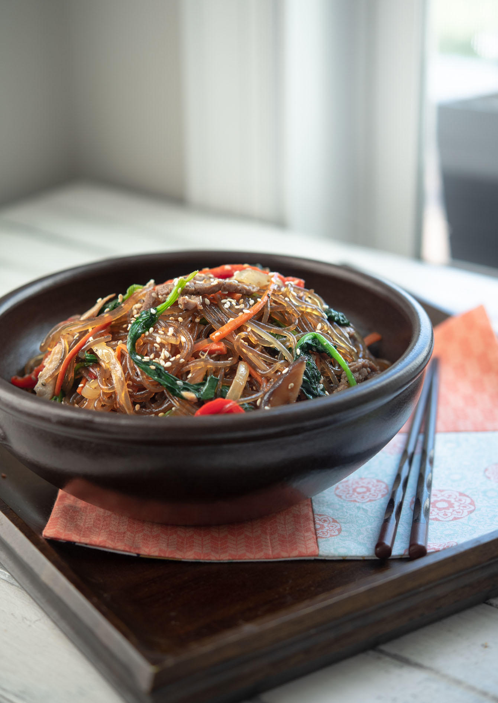

Japchae - Glass Noodle Stir Fry
created by Adam Ryu (reference of Beyond Kimchee by Holly Ford)

Description:
Korean glass noodle stir-fry featuring sweet potato noodles, vibrant veggies, and succulent meat without the fuss.
Ingredients:
Basics
- Dangmyeon (sweet potato noodles)
- Onions
- Carrots
- Peppers
- Spinach
- Shiitake
- Beef or pork
Sauce
- Soy sauce
- Garlic
- Sugar
- Oil
- Sesame oil
- Sesame seeds
- Sweet rice wine
Steps to Prepare:
Noodle Prep
- Put glass noodles in hot water for 15 minutes.
- Remove the water and keep noodles to the side, letting them soften.
Meat Prep
- Cut protein into thin sticks, about 1/4-inch wide, going against the grain or fibers.
- Mix protein with soy sauce, sugar, and sweet rice wine. Leave on side to marinate.
Sauce Prep
- Mix all the sauce seasoning ingredients in a bowl and keep to the side.
Cooking Veggies
- Warm up oil in a big pan on medium-high. Put in onions, carrots, peppers, and a salt to taste. Cook until soft but with a slight crunch.
- Add shiitake and more salt, cook until soft. If it get's too dry, add more oil.
- Towards the end, add in spinach and cook it down until soft. Then remove everything from the pan and put it on a big plate to cool.
Cooking Meat
- Heat the pan up on high. Add oil and then protein, cooking until done. Move the meat to the plate but leaving cooking juices in pan.
Final Steps
- Put the cooked noodles into the pan with the prepared sauce, mixing everything. Cook until the noodles are very soft and the sauce is soaked up by the noodles. (3-4 minutes)
- Toss everything together in the pan with the heat on low. Add sesame oil and seeds, mixing again. Check taste and adjust.
Congratultions! You have just made Japchae. Enjoy!